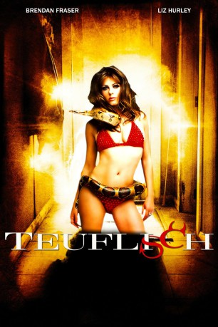

gesehen am 01.07.2015
gesehen am 01.07.2015Alternativ: Bedazzled gesehen am 01.07.2015
 
 IMDB-Wertung: 6.0 / 10
IMDB-Wertung: 6.0 / 10  Metascore:
Metascore: 
Sonderling Elliot Richards himmelt seit vier Jahren seine Kollegin Allison an. Sie nimmt ihn kaum wahr, als er ihr in einer Kneipe begegnet und in seinem Herzschmerz murmelt, dass er alles geben würde, Teil ihres Lebens zu sein. Satan erhört seinen Wunsch und erscheint in der unglaublich guten Figur einer Frau mit versengendem Sexappeal. Sie trickst den armen Elliot immer wieder aus.
Jahr: 2000
Dauer: 93 Minuten
FSK: 12
Land: USA Studio: 20th Century FoxTonspuren: DTS - ,
Untertitel: Deutsch, Englisch,
Auflösung: 1080p (1920x816) Größe: 5314 MB
Genre: Komödie, Fantasy, Liebe
Regisseur:  Harold Ramis
Harold Ramis
Drehbuch: Peter Cook, Peter Cook, Dudley Moore, Larry Gelbart, Harold Ramis
Soundtrack: David Newman
Darsteller:
 Brendan Fraser als Elliot
Brendan Fraser als Elliot Elizabeth Hurley als The Devil
Elizabeth Hurley als The Devil Frances O'Connor als Alison / Nicole
Frances O'Connor als Alison / Nicole Miriam Shor als Carol / Penthouse Hostess
Miriam Shor als Carol / Penthouse Hostess Orlando Jones als Dan / Esteban / Beach Jock / Sportscaster / African Party Guest
Orlando Jones als Dan / Esteban / Beach Jock / Sportscaster / African Party Guest Paul Adelstein als Bob / Roberto / Beach Jock / Sportscaster / Lincoln Aide
Paul Adelstein als Bob / Roberto / Beach Jock / Sportscaster / Lincoln Aide Toby Huss als Jerry / Alejandro / Beach Jock / Sportscaster / Lance
Toby Huss als Jerry / Alejandro / Beach Jock / Sportscaster / Lance Brian Doyle-Murray als Priest
Brian Doyle-Murray als Priest Jeff Doucette als Desk Sergeant
Jeff Doucette als Desk Sergeant Aaron Lustig als Synedyne Supervisor
Aaron Lustig als Synedyne Supervisor Rudolf Martin als Raoul
Rudolf Martin als Raoul Julian Firth als John Wilkes Booth
Julian Firth als John Wilkes Booth Roger Hammond als Play Actor
Roger Hammond als Play Actor Bonnie Somerville als Girl at Beer Garden
Bonnie Somerville als Girl at Beer Garden Tom Woodruff Jr. als Biggest Devil
Tom Woodruff Jr. als Biggest Devil Jan Citron als Churchgoer , uncredited
Jan Citron als Churchgoer , uncredited Lex Lang als The Devil , uncredited
Lex Lang als The Devil , uncredited Barry Ratcliffe als Devil's Lawyer , uncredited
Barry Ratcliffe als Devil's Lawyer , uncredited Mark Winn als Columbian Soldier , uncredited
Mark Winn als Columbian Soldier , uncreditedDatei: X:\2000\Teuflisch (2000, FSK12, 1920x816).mkv seit 30.06.2015
Festplatte: HD 1996-2002
 Es gibt insgesamt 82 Filme in der Gruppe '2000'
Es gibt insgesamt 82 Filme in der Gruppe '2000'